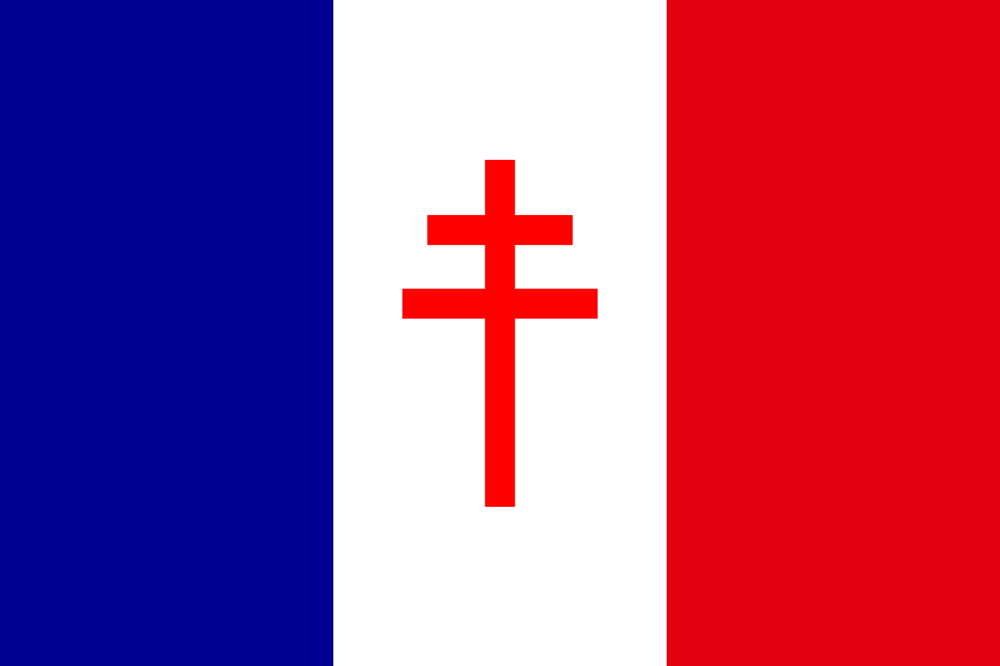

France Libre
Découvrez nos projets et services communautaires
Serveur Discord
Replay 24 heures
FM Libre (Radio)
Instagram (FRL)
Instagram (Première Chaîne)
Carte des succursales dans l'AFOE
Retourner sur le site principal